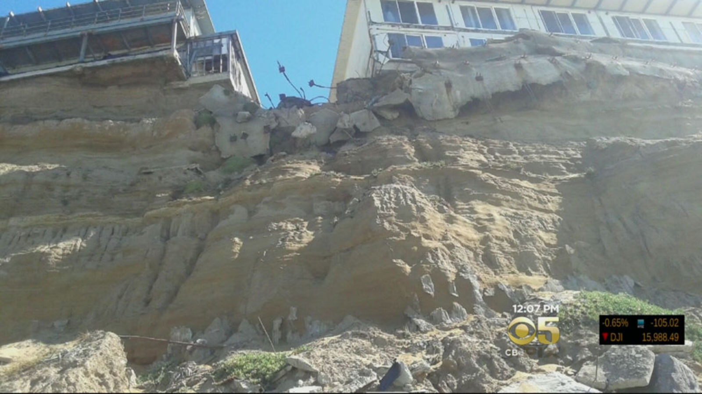
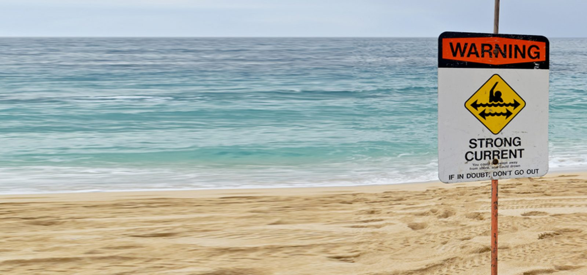
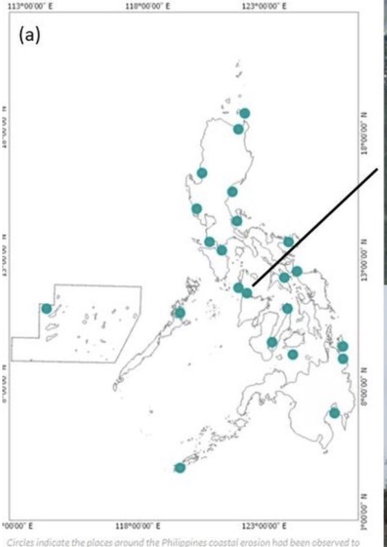
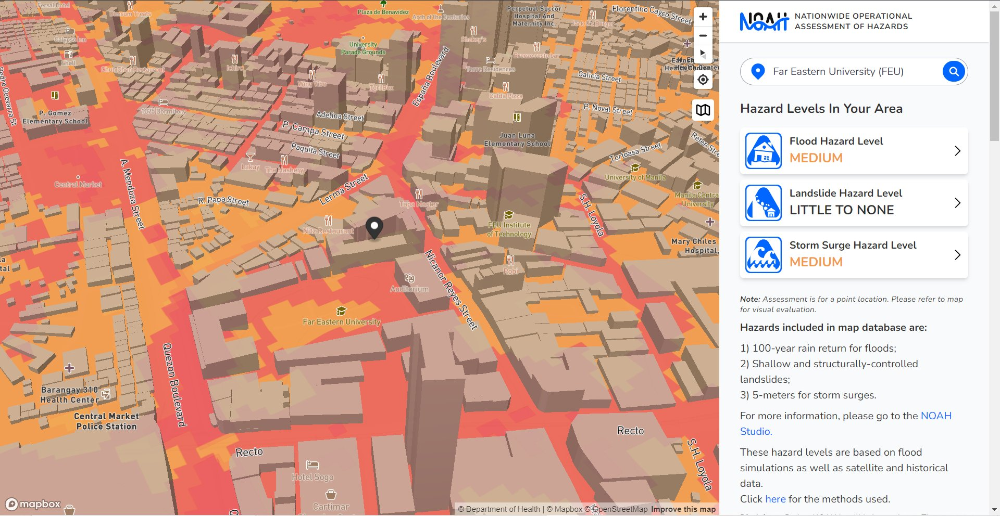
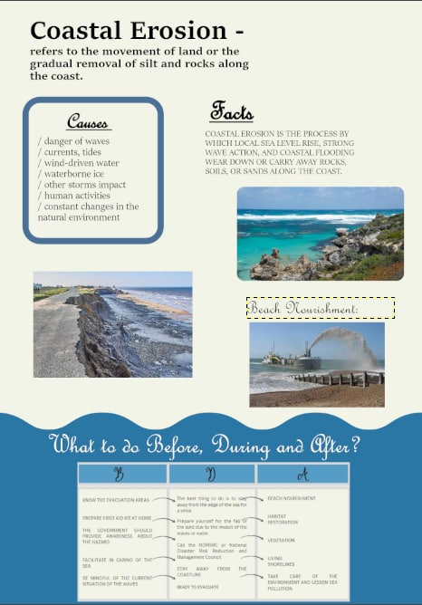
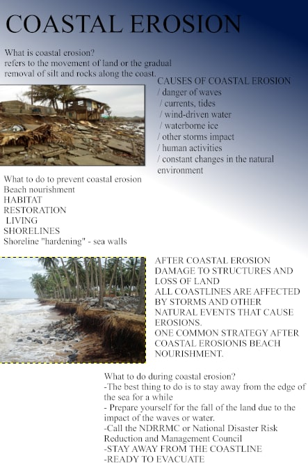
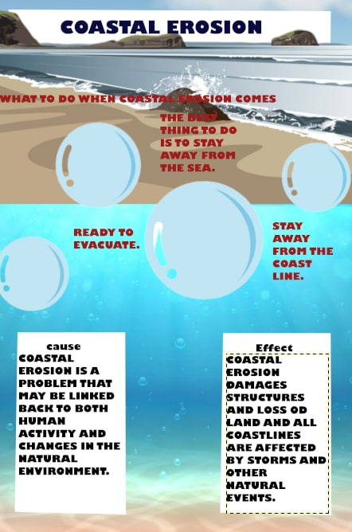

Coastal Erosion
Causes of coastal erosion
- Danger of waves
- Currents, tides
- Wind-driven water
- Waterborne ace
- Other storms impact
- Human activities
- Constant changes in the natural environment
What to do to prevent coastal erosion
- Beach nourishment
- Habitat restoration
- Living shorelines
- Shoreline hardening
What to do during coastal erosion
2. Prepare yourself for the fall of the land due to the impact of the waves or water
3. Call the NDRRMC or National Disaster Risk Reduction and Management Council
4. Stay away from the coastline
5. Ready to evacuate

After coastal erosion
Beach nourishment, also known as the placement of more sand on a beach in order to function as a buffer against erosion or to boost the beach's recreational value, is a common strategy for preventing coastal erosion. Beaches may be nourished by placing additional sand on them.
FACTS
Philippine Hazard Map for Coastal Erosion
According to the Research of Bautista et al. (2020), The Philippines, an archipelagic nation with a coastline of at least 36,000 kilometers, has been classified as including more than twenty locations at danger of coastal erosion. One of these places, which is situated in Ibajay, Aklan, was subject to an examination. A three-dimensional numerical model was developed in order to simulate and assess the existing hydrodynamics as well as the silt flow. Using continuous data on water level and velocity collected from sensors deployed in two independent field surveys, the correctness of the model was ensured. The findings of the model are highly congruent with the actual data and properly represent the tide-dominated hydrodynamics of the investigated region. By simulating flows under flood-ebb, spring-nap, southwest-northeast monsoon, and 2-year circumstances, the temporal variability of the hydrodynamics and transport of sediments was examined. Using the findings of the long-term simulation, the locations of places that suffered erosion and deposition were determined. Except for the region along the stream where local erosion and deposition processes occur, none of these zones were situated along the coastline. On the basis of this information, it is possible to conclude that the coastline in issue is safe given the current tide conditions. The collected findings may be utilized as baseline data for guiding the municipality's future coastal development, and the approach employed in this study can be extended to other erosion-prone beaches in the United States.
Importance of a Hazard Map
Assessments of hazards and risks are the essential first step in disaster risk management (DRM) and the foundation for developing DRM policy. They must consider worst-case scenarios in the event of the greatest conceivable danger, while acknowledging that hazard evaluations of earthquakes and tsunamis will always have limits and related uncertainties. The purpose of hazard maps should be to advise and promote rapid evacuation. They should be easily accessible and simple to comprehend. Primarily, they are constructed to resist any calamities. Hazard maps are tools that, when utilized correctly by planners, developers, and engineers, may save lives and save economic losses by preventing exposure to certain dangers and designing other projects to mitigate or eliminate the possible adverse effects of these hazards.
NOAH
UP NOAH is a public disaster risk reduction program designed specifically to reduce dangers in the nation. You can enter your current location or any other location in the Philippines on this website to learn about the dangers and nearby establishment that could assist in disaster relief.

Far Eastern University's Hazard Map
PETA No. 1
  References
Bautista, D., Herrera, E., Hernandez, B., & Yoshikai, M. (2020, May). Numerical investigation of
coastal sediment transport for assessment of coastal erosion of a Philippine coastline using a 3D
hydrodynamic model. ResearchGate. https://www.researchgate.net/publication/341765478_Numerical_investigation_of_coastal_sediment_transport_for_assessment_of_coastal_erosion_of_a_Philippine_coastline_using_a_3D_hydrodynamic_model
Coastal Erosion Facts. (n.d.). Some Interesting Facts. from
https://someinterestingfacts.net/coastal-erosion-facts/
Department of Homeland Security. (n.d.). Protect your Property from Coastal Erosion. FEMA.gov.
from
https://www.fema.gov/sites/default/files/2020-11/fema_protect-your-property_coastal-erosion.pdf
Hazard Maps. (n.d.). Pacific Northwest Seismic Network. from https://pnsn.org/outreach/hazard-maps-and-scenarios/hazard-maps
Hillebrand, S. (2021, April 1). Coastal Erosion | U.S. Climate Resilience Toolkit. U.S. Climate
Resilience Toolkit. from https://toolkit.climate.gov/topics/coastal-flood-risk/coastal-erosion
Sagara, J. (n.d.). KNOWLEDGE NOTE 5-1 Risk Assessment and Hazard Mapping. PreventionWeb. from https://www.preventionweb.net/files/29163_drmkn511.pdf
Yincan, Y. (2017). Coastal Erosion. Science Direct. https://www.sciencedirect.com/topics/earth-and-planetary-sciences/coastal-erosion#:~:text=Coastal%20erosion%20is%20a%20result,coastline%20retreat%20and%20beach%20erosion